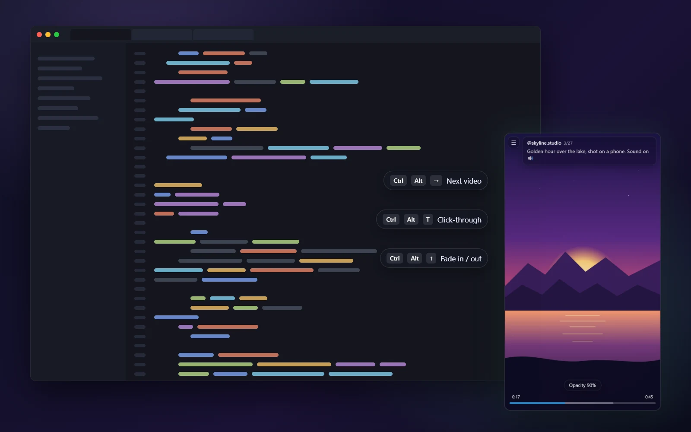
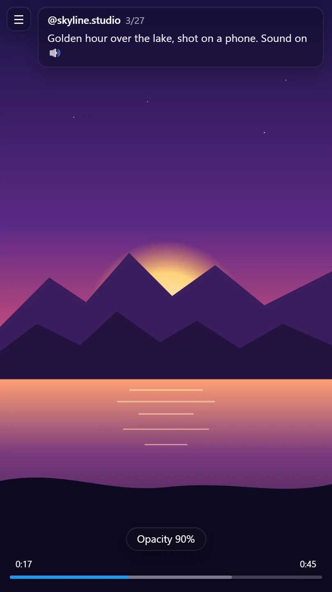
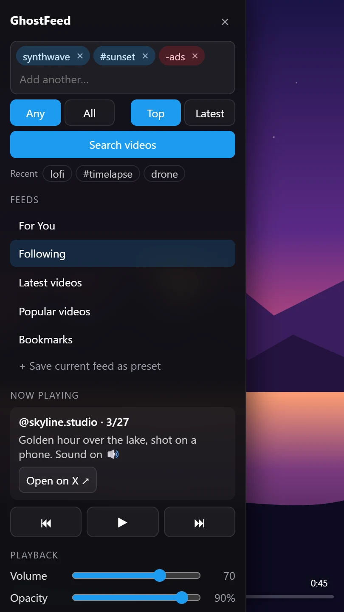

Your X feed, floating over your work.
GhostFeed plays X (Twitter) videos as a borderless, always-on-top, click-through overlay on Windows. Fade it out, control it with global hotkeys, and keep working underneath.
Windows 10 / 11 x64 · No installer · MIT licensed · 1.4 MB lite build for PCs with .NET 8

Made for watching while you work
GhostFeed takes the videos from whatever X page you point it at and plays them one after another in a window that stays out of your way.
Always on top
Borderless window you can drag anywhere and resize from any edge. It can reshape itself for portrait or landscape clips.
Click-through
Let clicks pass straight through to the app underneath, and fade the overlay anywhere from 10% to 100%.
Global hotkeys
Next, previous, pause, seek, volume, opacity and fullscreen from any app with Ctrl+Alt shortcuts.
Multi-tag search
Mix words, #tags, @accounts and -exclusions, match Any or All, and sort by Top or Latest.
Any feed
For You, Following, bookmarks, a user's Media tab or any search, plus your own saved presets.
Up to 4K fullscreen
Fullscreen switches to the best version X has and upgrades the clip that's playing without restarting it.
Instant next
The next clip loads while the current one plays, so skipping doesn't wait on a spinner.
Tiny and private
About 1.4 MB, built on the WebView2 runtime that comes with Windows 11. No telemetry, and your session stays on your PC.
Readable, controllable, out of the way
The controls appear when you move the mouse and fade when you don't.
- Frosted captions. The author and caption sit on a tinted glass card that's readable on any frame.
- Fly-out menu. Search, feeds, now playing, transport controls, volume and opacity in one panel (S).
- Scrub bar. Click or drag to seek, with buffered progress and a time tooltip (V toggles it).
- Click to pause, double-click for fullscreen, wheel for volume, Ctrl+wheel for opacity.


Global hotkeys
These work from any app, even while GhostFeed is click-through. You can rebind them in settings.json.
| Shortcut | Action | Shortcut | Action |
|---|---|---|---|
| Ctrl+Alt+Space | Play / pause | Ctrl+Alt+T | Click-through |
| Ctrl+Alt+→ / ← | Next / previous | Ctrl+Alt+↑ / ↓ | Opacity |
| Ctrl+Alt+Shift+→ / ← | Seek ±5 s | Ctrl+Alt+Shift+↑ / ↓ | Volume |
| Ctrl+Alt+F | Fullscreen | Ctrl+Alt+S | Menu and search |
| Ctrl+Alt+A | Autoplay / loop | Ctrl+Alt+M | Mute |
| Ctrl+Alt+H | Hide / show | Ctrl+Alt+Q | Quit |
Install in a minute
There's no installer and no admin rights needed. Settings stay in your user profile.
- Download GhostFeed-win-x64.exe (runs on its own). If you already have the .NET 8 Desktop Runtime, the 1.4 MB lite build does the same job.
- Run it. If SmartScreen says "Windows protected your PC", click More info → Run anyway, because the exe isn't code-signed yet. You can check the file against
SHA256SUMS.txtin the release. - Sign in to X in the window that opens. Google, Apple and password sign-in all work, and the session stays on your PC.
- Watch. GhostFeed hides the browser and starts playing. Press S to search or switch feeds, and Ctrl+Alt+T to make it click-through.
FAQ
Is GhostFeed free?
Yes. It's free and open source under the MIT license. The code is on GitHub.
Does GhostFeed see my X password?
No. You sign in on x.com itself inside an embedded Microsoft Edge (WebView2) browser. The session is stored in %LOCALAPPDATA%\GhostFeed on your PC and isn't sent anywhere else.
Does it download or save videos?
No. It streams the same files x.com plays, at a normal scrolling pace, and keeps nothing on disk.
Can I use it while gaming?
Yes, with games in borderless or windowed mode. Exclusive-fullscreen games draw over every window, including always-on-top ones.
Is there a Mac or Linux version?
Not yet. GhostFeed relies on Windows window features (layered and click-through windows, global hotkeys) and the WebView2 runtime.
What about local video files?
Use the sibling app GhostReel, an always-on-top, click-through player for your own files.